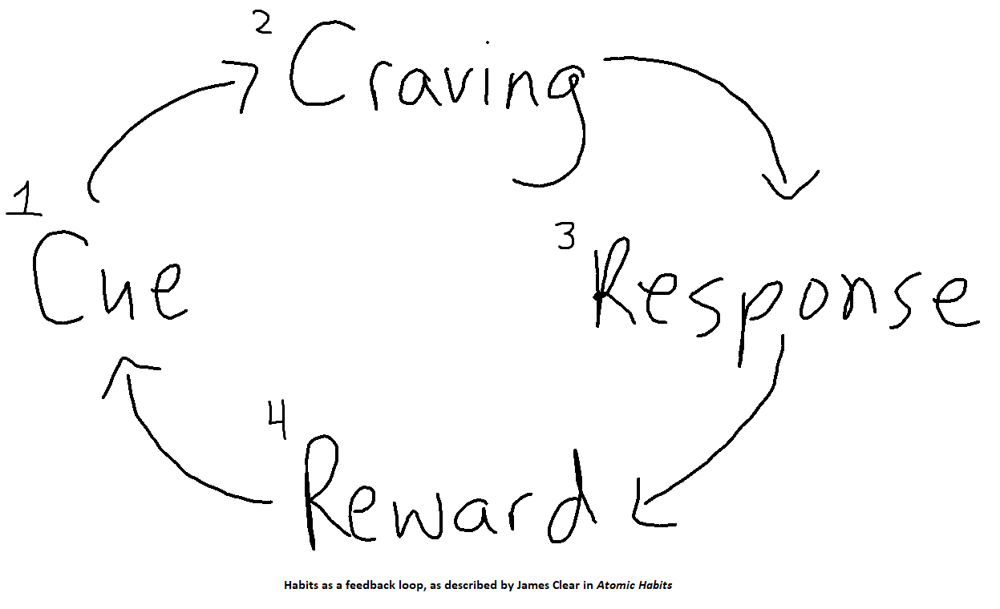

Autopilot, Disengage!
Brandon Rockhold / Senior Engineering Manager
Habits
Routines or behaviors performed regularly, often *automatically
*Sometimes for good, sometimes for evil (or at least un-good)
Goals < 10 Minute Version
- Learn about habit formation & how to evaluate their effectiveness
- Learn strategies for creating/breaking habits
- Commit to use what you've learned
Make fun of all my bad habits
Recommended Reading / Inspiration
The Four Stages of Habits
- Cue - The trigger predicting a reward
- Craving - The motivation driving our change
- Response - The actual habit being performed
- Reward - The end goal of the habit
The Habit Feedback Loop

A Framework for Changing Behavior
Stage 1: Cue - Make it Obvious
A Framework for Changing Behavior
Stage 2: Craving - Make it Attractive
A Framework for Changing Behavior
Stage 3: Response - Make it Easy
A Framework for Changing Behavior
Stage 4: Reward - Make it Satisfying